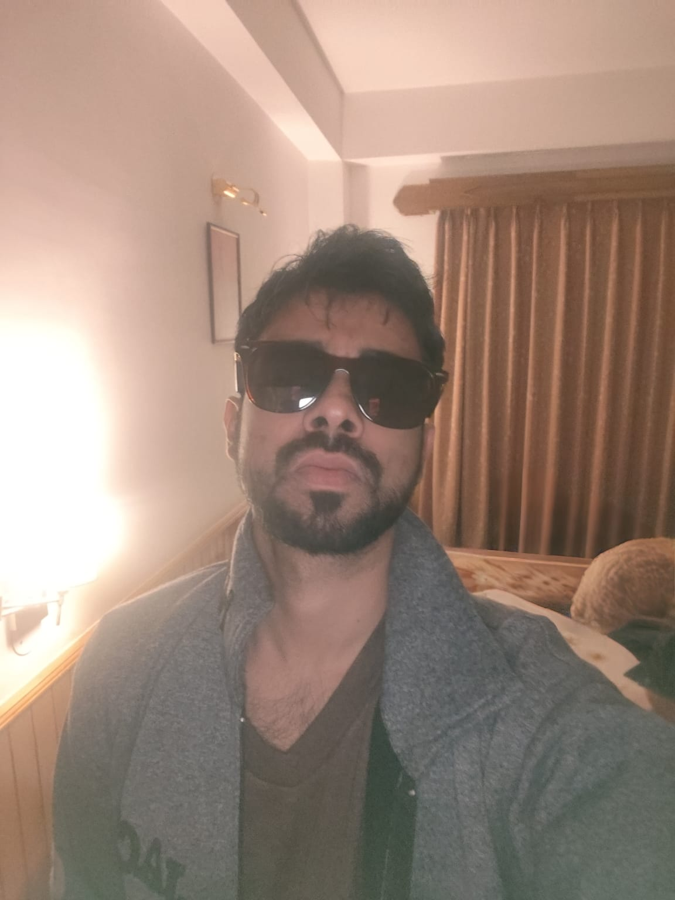

PhD Scholar, Intelligent Systems
Indian Institute of Technology (IIT) Kanpur

I am a PhD student in the Department of Intelligent Systems at IIT Kanpur. My research explores the intersection of quantum computing, reinforcement learning, and convex optimization.
Previously, I completed my M.Tech in Electronics and Communication Engineering at IIT (ISM) Dhanbad, where my thesis investigated fundamental limits on entanglement-assisted quantum online prediction. Before returning to academia, I worked as an Assistant System Engineer at Tata Consultancy Services.